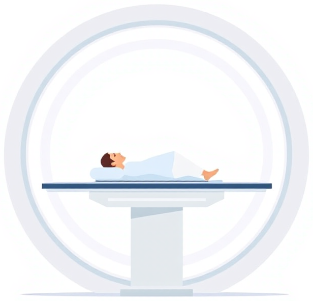
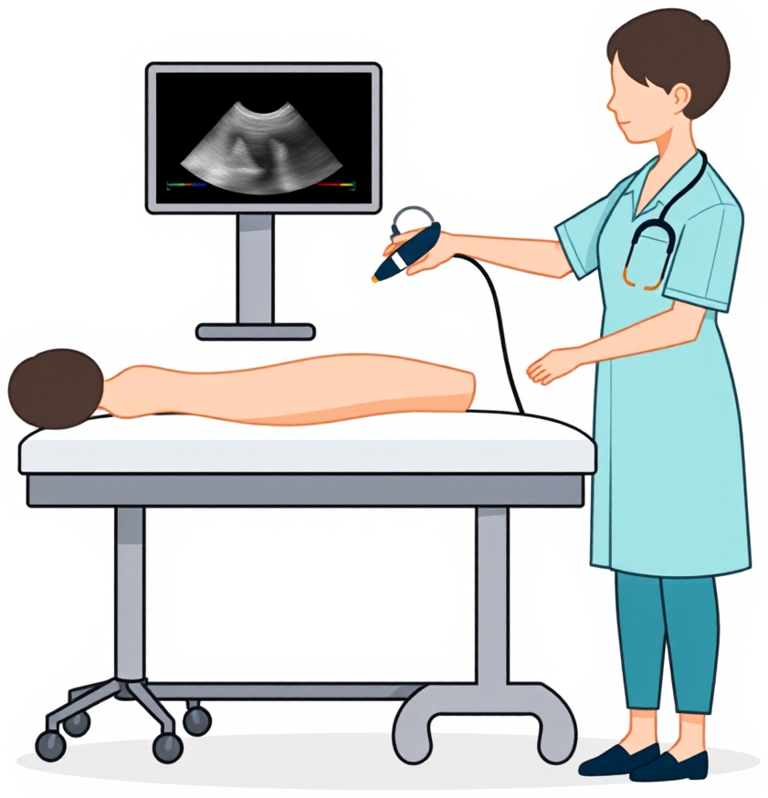
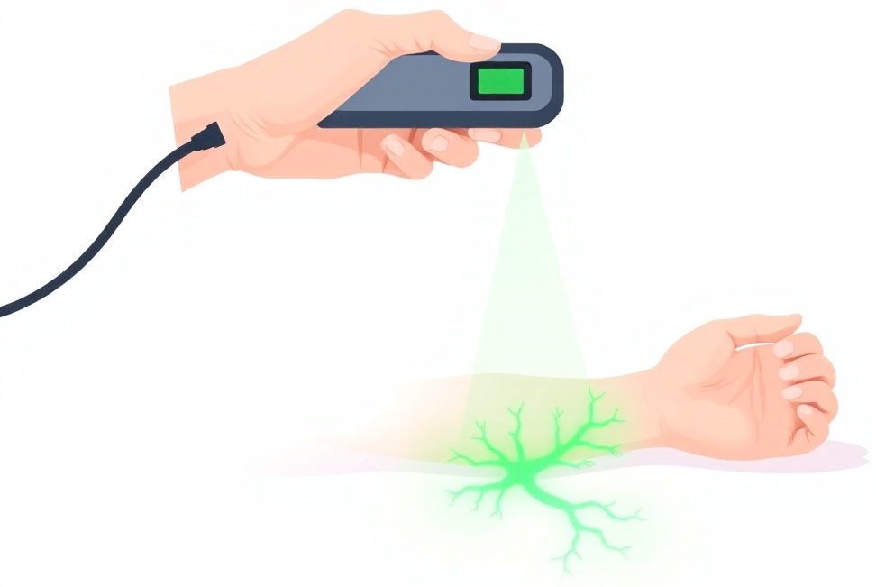
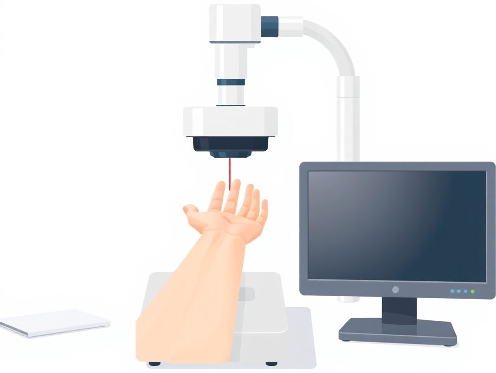
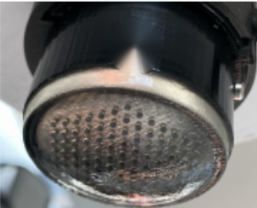

Vessel-detection modalities
The table of ../poster.tex, reproduced at A4 width with a citation under every column head and every pros/cons label. Sources are the author’s local Zotero library; modality-table-cited.bib records the Zotero item key of each entry.
| MRI [1] | CT [2] | US [3] | NIR [4] |
OCE /OCT [5] |
VBTS (ours) [6] | ||||||||||||||||||||||||||||||||||||
|
 |
 |
 |
 |
 |
|||||||||||||||||||||||||||||||||||||
|
|
|
|
|
|
||||||||||||||||||||||||||||||||||||
|
|
|
|
|
|
Pros above, cons below. A lab-built vision-based tactile sensor (VBTS) costs ∼$50 against $2.4k–$600k for imaging and needs no suite, radiation, contrast or trained operator — at the price of coarser resolution and shallower reach.
On the citations. The head of each column cites the reference that defines the modality; every pros/cons label cites the one to three sources that support that specific claim. The illustration row carries no citation: those five drawings and the ViTacTip photograph are the poster’s own artwork, not reproductions of published figures. The dollar-sign count is monotone in price (VBTS 1, US and NIR 2, CT and OCE/OCT 3, MRI 4) and is a visual scale, not a claim of its own; the price labels beneath it carry the citations. Prices are as listed by the cited sources: $600k+ is the 2020 low-end 1.5 T figure [24], $150k+ a single-slice scanner in 2013 [27], $3.8k+ the Clarius L15 HD3 list price plus membership [31], $2.4k the £1,798 HelloVein Lite 2.0 converted at the rate of the poster’s compilation [12], $40–150k the price of ophthalmic OCT systems [39], and ∼$50 the ViTacTip parts cost including camera and 3D printing [20]. “no success gain” refers to first-attempt success versus palpation in unselected patients; the same trials do report shorter insertion times and fewer attempts [37, 38].
References
- [1] Michael P. Hartung, Thomas M. Grist, and Christopher J. François. Magnetic resonance angiography: current status and future directions. Journal of Cardiovascular Magnetic Resonance, 13:19, 2011. https://doi.org/10.1186/1532-429X-13-19.
- [2] Willi A. Kalender. X-ray computed tomography. Physics in Medicine and Biology, 51(13):R29–R43, 2006. https://doi.org/10.1088/0031-9155/51/13/R03.
- [3] Barys Ihnatsenka and André P. Boezaart. Ultrasound: basic understanding and learning the language. International Journal of Shoulder Surgery, 4(3):55–62, 2010. https://pmc.ncbi.nlm.nih.gov/articles/PMC3063344/.
- [4] Cheng-Tang Pan, Mark D. Francisco, Chung-Kun Yen, Shao-Yu Wang, and Yow-Ling Shiue. Vein pattern locating technology for cannulation: a review of the low-cost vein finder prototypes utilizing near infrared (NIR) light to improve peripheral subcutaneous vein selection for phlebotomy. Sensors, 19(16):3573, 2019. https://doi.org/10.3390/s19163573.
- [5] David Huang, Eric A. Swanson, Charles P. Lin, Joel S. Schuman, William G. Stinson, Warren Chang, Michael R. Hee, Thomas Flotte, Kenton Gregory, Carmen A. Puliafito, and James G. Fujimoto. Optical coherence tomography. Science, 254(5035):1178–1181, 1991. https://doi.org/10.1126/science.1957169.
- [6] Wen Fan, Haoran Li, Weiyong Si, Shan Luo, Nathan Lepora, and Dandan Zhang. ViTacTip: Design and verification of a novel biomimetic physical vision-tactile fusion sensor. arXiv preprint arXiv:2402.00199, 2024. https://doi.org/10.48550/arXiv.2402.00199.
- [7] Massimo Lamperti, Daniele Guerino Biasucci, Nicola Disma, Mauro Pittiruti, Christian Breschan, Davide Vailati, Matteo Subert, Vilma Traškaitė, Andrius Macas, Jean-Pierre Estebe, Regis Fuzier, Emmanuel Boselli, and Philip Hopkins. European Society of Anaesthesiology guidelines on peri-operative use of ultrasound-guided for vascular access (PERSEUS vascular access). European Journal of Anaesthesiology, 37(5):344–376, 2020. https://doi.org/10.1097/EJA.0000000000001180.
- [8] Massimo Lamperti, Andrew R. Bodenham, Mauro Pittiruti, Michael Blaivas, John G. Augoustides, Mahmoud Elbarbary, Thierry Pirotte, Dimitrios Karakitsos, Jack LeDonne, Stephanie Doniger, Giancarlo Scoppettuolo, David Feller-Kopman, Wolfram Schummer, Roberto Biffi, Eric Desruennes, Lawrence A. Melniker, and Susan T. Verghese. International evidence-based recommendations on ultrasound-guided vascular access. Intensive Care Medicine, 38(7):1105–1117, 2012. https://doi.org/10.1007/s00134-012-2597-x.
- [9] Ricardo Franco-Sadud, Daniel Schnobrich, Benji K. Mathews, Carolina Candotti, Saaid Abdel-Ghani, Martin G. Perez, Sophia Chu Rodgers, Michael J. Mader, Elizabeth K. Haro, Ria Dancel, Joel Cho, Loretta Grikis, Brian P. Lucas, and Nilam J. Soni. Recommendations on the use of ultrasound guidance for central and peripheral vascular access in adults: a position statement of the Society of Hospital Medicine. Journal of Hospital Medicine, 14(9):E1–E22, 2019. https://doi.org/10.12788/jhm.3287.
- [10] Guy Frija, Ivana Blažić, Donald P. Frush, Monika Hierath, Michael Kawooya, Lluis Donoso-Bach, and Boris Brkljačić. How to improve access to medical imaging in low- and middle-income countries? EClinicalMedicine, 38:101034, 2021. https://doi.org/10.1016/j.eclinm.2021.101034.
- [11] AccuVein, Inc. A health professional’s guide for use and operation of the AccuVein AV500 (user manual). https://www.accuvein.com/wp-content/uploads/2022/08/AV500-User-Manual.pdf, 2022.
- [12] HelloVein. Lite 2.0 vein finder / vein illuminator for IV access and phlebotomy (product page). https://hellovein.co.uk/product/lite2-0/, 2026.
- [13] F. B. Chiao, F. Resta-Flarer, J. Lesser, J. Ng, A. Ganz, D. Pino-Luey, H. Bennett, C. Perkins, and B. Witek. Vein visualization: patient characteristic factors and efficacy of a new infrared vein finder technology. British Journal of Anaesthesia, 110(6):966–971, 2013. https://doi.org/10.1093/bja/aet003.
- [14] Shinichiro Sekiguchi, Kiyoshi Moriyama, Joho Tokumine, Alan Kawarai Lefor, Harumasa Nakazawa, Yasuhiko Tomita, and Tomoko Yorozu. Near-infrared venous imaging may be more useful than ultrasound guidance for novices to obtain difficult peripheral venous access: a crossover simulation study. Medicine, 102(12):e33320, 2023. https://doi.org/10.1097/MD.0000000000033320.
- [15] Varuna Vyas, Ankur Sharma, Shilpa Goyal, and Nikhil Kothari. Infrared vein visualization devices for ease of intravenous access in children: hope versus hype. Anaesthesiology Intensive Therapy, 53(1):69–78, 2021. https://doi.org/10.5114/ait.2021.103515.
- [16] Jonas Olsen, Jon Holmes, and Gregor B. E. Jemec. Advances in optical coherence tomography in dermatology—a review. Journal of Biomedical Optics, 23(4):040901, 2018. https://doi.org/10.1117/1.JBO.23.4.040901.
- [17] Kirill V. Larin and David D. Sampson. Optical coherence elastography—OCT at work in tissue biomechanics. Biomedical Optics Express, 8(2):1172–1202, 2017. https://doi.org/10.1364/BOE.8.001172.
- [18] Tianxin Gao, Shuai Liu, Ancong Wang, Xiaoying Tang, and Yingwei Fan. Vascular elasticity measurement of the great saphenous vein based on optical coherence elastography. Journal of Biophotonics, 16(2):e202200245, 2022. https://doi.org/10.1002/jbio.202200245.
- [19] Brendan F. Kennedy, Philip Wijesinghe, and David D. Sampson. The emergence of optical elastography in biomedicine. Nature Photonics, 11(4):215–221, 2017. https://doi.org/10.1038/nphoton.2017.6.
- [20] Dandan Zhang, Wen Fan, Jialin Lin, Haoran Li, Qingzheng Cong, Weiru Liu, Nathan F. Lepora, and Shan Luo. Design and benchmarking of a multi-modality sensor for robotic manipulation with GAN-based cross-modality interpretation. arXiv preprint arXiv:2501.02303, 2025. https://doi.org/10.48550/arXiv.2501.02303.
- [21] Wenzhen Yuan, Siyuan Dong, and Edward H. Adelson. GelSight: high-resolution robot tactile sensors for estimating geometry and force. Sensors, 17(12):2762, 2017. https://doi.org/10.3390/s17122762.
- [22] Ian H. Taylor, Siyuan Dong, and Alberto Rodriguez. GelSlim 3.0: high-resolution measurement of shape, force and slip in a compact tactile-sensing finger. In 2022 International Conference on Robotics and Automation (ICRA), 2022. https://doi.org/10.1109/ICRA46639.2022.9811832.
- [23] Wen Fan, Haoran Li, Qingzheng Cong, and Dandan Zhang. MagicGripper: a mini-MagicTac integrated gripper enabling multimodal perception in contact-rich manipulation. IEEE Transactions on Automation Science and Engineering, 22, 2025. https://doi.org/10.1109/TASE.2025.3631485.
- [24] Lawrence L. Wald, Patrick C. McDaniel, Thomas Witzel, Jason P. Stockmann, and Clarissa Zimmerman Cooley. Low-cost and portable MRI. Journal of Magnetic Resonance Imaging, 52(3):686–696, 2020. https://doi.org/10.1002/jmri.26942.
- [25] Mathieu Sarracanie, Cristen D. LaPierre, Najat Salameh, David E. J. Waddington, Thomas Witzel, and Matthew S. Rosen. Low-cost high-performance MRI. Scientific Reports, 5:15177, 2015. https://doi.org/10.1038/srep15177.
- [26] Mercy H. Mazurek, Bradley A. Cahn, Matthew M. Yuen, Anjali M. Prabhat, Isha R. Chavva, Jill T. Shah, Anna L. Crawford, E. Brian Welch, Jonathan Rothberg, Laura Sacolick, Michael Poole, Charles Wira, Charles C. Matouk, Adrienne Ward, Nona Timario, Audrey Leasure, Rachel Beekman, Teng J. Peng, Jens Witsch, Joseph P. Antonios, Guido J. Falcone, Kevin T. Gobeske, Nils Petersen, Joseph Schindler, Lauren Sansing, Emily J. Gilmore, David Y. Hwang, Jennifer A. Kim, Ajay Malhotra, Gordon Sze, Matthew S. Rosen, W. Taylor Kimberly, and Kevin N. Sheth. Portable, bedside, low-field magnetic resonance imaging for evaluation of intracerebral hemorrhage. Nature Communications, 12:5119, 2021. https://doi.org/10.1038/s41467-021-25441-6.
- [27] R. P. Santos, A. L. A. Pires, R. M. V. R. Almeida, and W. C. A. Pereira. Computed tomography scanner productivity and entry-level models in the global market. Journal of Healthcare Engineering, 2017:1304960, 2017. https://doi.org/10.1155/2017/1304960.
- [28] Block Imaging. 2026 CT scanner price guide. https://www.blockimaging.com/how-much-does-a-ct-scanner-cost, 2026. Reseller’s price guide, not peer-reviewed.
- [29] David J. Brenner and Eric J. Hall. Computed tomography—an increasing source of radiation exposure. New England Journal of Medicine, 357(22):2277–2284, 2007. https://doi.org/10.1056/NEJMra072149.
- [30] Dominik Fleischmann. CT angiography: injection and acquisition technique. Radiologic Clinics of North America, 48(2):237–247, 2010. https://doi.org/10.1016/j.rcl.2010.02.002.
- [31] Clarius Mobile Health. Clarius L15 HD3 high-frequency linear handheld ultrasound scanner (store page). https://store.clarius.com/products/l15-hd3-handheld-ultrasound-scanner, 2026.
- [32] Butterfly Network, Inc. Butterfly special offers (iQ3 store page). https://www.butterflynetwork.com/offers, 2026.
- [33] Mattias Mårtensson, Mats Olsson, Björn Segall, Alan G. Fraser, Reidar Winter, and Lars-Åke Brodin. High incidence of defective ultrasound transducers in use in routine clinical practice. European Journal of Echocardiography, 10(3):389–394, 2009. https://doi.org/10.1093/ejechocard/jen295.
- [34] Nicholas J. Hangiandreou, Scott F. Stekel, Donald J. Tradup, Krzysztof R. Gorny, and Deirdre M. King. Four-year experience with a clinical ultrasound quality control program. Ultrasound in Medicine & Biology, 37(8):1350–1357, 2011. https://doi.org/10.1016/j.ultrasmedbio.2011.05.007.
- [35] Nicholas J. Dudley and Darren J. Woolley. A multicentre survey of the condition of ultrasound probes. Ultrasound, 24(4):190–197, 2016. https://doi.org/10.1177/1742271X16662301.
- [36] Joon Min Park, Min Joung Kim, Hyeon Woo Yim, Won-Chul Lee, Hyunsuk Jeong, and Na Jin Kim. Utility of near-infrared light devices for pediatric peripheral intravenous cannulation: a systematic review and meta-analysis. European Journal of Pediatrics, 175(12):1975–1988, 2016. https://doi.org/10.1007/s00431-016-2796-5.
- [37] Tricia M. Kleidon, Jessica Schults, Claire M. Rickard, and Amanda J. Ullman. Techniques and technologies to improve peripheral intravenous catheter outcomes in pediatric patients: systematic review and meta-analysis. Journal of Hospital Medicine, 16(12):742–750, 2021. https://doi.org/10.12788/jhm.3718.
- [38] Si Li Annalyn Ng, Xin Rong Gladys Leow, Wen Wei Ang, and Ying Lau. Effectiveness of near-infrared light devices for peripheral intravenous cannulation in children and adolescents: a meta-analysis of randomized controlled trials. Journal of Pediatric Nursing, 75:e81–e92, 2024. https://doi.org/10.1016/j.pedn.2023.12.034.
- [39] Ge Song, Evan T. Jelly, Kengyeh K. Chu, Wesley Y. Kendall, and Adam Wax. A review of low-cost and portable optical coherence tomography. Progress in Biomedical Engineering, 3(3):032002, 2021. https://doi.org/10.1088/2516-1091/abfeb7.
- [40] B. Wan, C. Ganier, X. Du-Harpur, N. Harun, F. M. Watt, R. Patalay, and M. D. Lynch. Applications and future directions for optical coherence tomography in dermatology. British Journal of Dermatology, 184(6):1014–1022, 2021. https://doi.org/10.1111/bjd.19553.
- [41] James C. Gwilliam, Zachary Pezzementi, Erica Jantho, Allison M. Okamura, and Steven Hsiao. Human vs. robotic tactile sensing: detecting lumps in soft tissue. In 2010 IEEE Haptics Symposium, pages 21–28, 2010. https://doi.org/10.1109/HAPTIC.2010.5444685.
- [42] Qiliang Chen, Yulin Huang, Xing Zhu, Hong Lu, Zhongzhi Ji, Jiacheng Yang, and Jingjing Luo. Palpation localization of radial artery based on 3-dimensional convolutional neural networks. EURASIP Journal on Image and Video Processing, 2022(1), 2022. https://doi.org/10.1186/s13640-022-00587-5.
- [43] Piotr Blaszyk. Manuscript source repository of the ECCV 2026 paper: working notes at snapshot commit 03f280a (15 August 2026). Local git repository 2026_ECCV_Piotr_Blaszyk, snapshot commit 03f280a, 2026. Accessed 2026-09-02 from the local repository; records cited: main.tex (Limitations), OLD_RESULTS.md and RESULTS_UPDATE_20260815.md.
- [44] Mike Lambeta, Po-Wei Chou, Stephen Tian, Brian Yang, Benjamin Maloon, Victoria Rose Most, Dave Stroud, Raymond Santos, Ahmad Byagowi, Gregg Kammerer, Dinesh Jayaraman, and Roberto Calandra. DIGIT: a novel design for a low-cost compact high-resolution tactile sensor with application to in-hand manipulation. IEEE Robotics and Automation Letters, 5(3):3838–3845, 2020. https://doi.org/10.1109/LRA.2020.2977257.